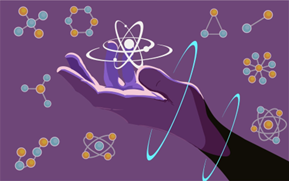
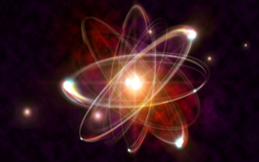
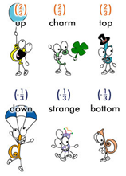
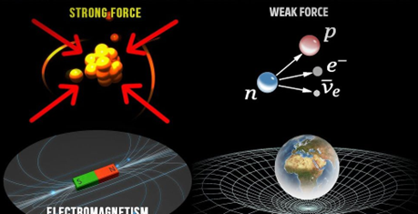
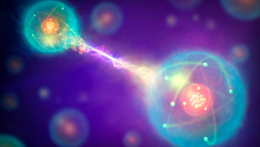
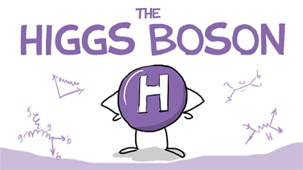
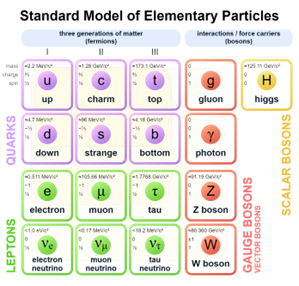
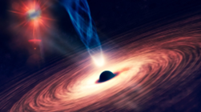

Once upon a time, in a universe far, far smaller than we can imagine, there existed a hidden realm known as particle physics. This enchanting realm, filled with tiny, mysterious entities, plays a crucial role in shaping the very fabric of our existence. Imagine stepping into a magical world where the ordinary rules of reality no longer apply, and where particles dance and twirl in a cosmic ballet. Let's embark on a journey to unravel the secrets of particle physics, where the minuscule becomes monumental.
Chapter 1: The Intro - Our Subatomic Stage
Our adventure begins with the realisation that everything around us, including ourselves, is made up of particles. These particles, the building blocks of the universe, come in various shapes and sizes, each with its own unique characteristics. From the familiar protons and neutrons nestled within the heart of an atom to the elusive neutrinos that flit through the cosmos, these tiny entities hold the key to understanding the grand tapestry of existence.


Chapter 2: The Cast of Characters

In the subatomic realm, particles are the stars of the show. Meet the quarks, the whimsical elementary particles that come in six distinct flavours – up, down, charm, strange, top, and bottom. These quirky quarks, bound by the force of gluons, form the protons and neutrons that make up the nucleus of an atom. Don't forget the electrons, the elegant dancers that orbit the atomic nucleus, creating the delicate harmony that keeps matter stable.
Chapter 3: The Forces at Play
As our story unfolds, we encounter the fundamental forces that govern the interactions between particles. Picture the electromagnetic force as the puppeteer, guiding charged particles like electrons through their cosmic waltz. The strong nuclear force, reminiscent of a cosmic glue, binds quarks together within protons and neutrons. The weak nuclear force, a gentle hand, oversees processes like radioactive decay, adding a touch of drama to our subatomic tale.

Chapter 4: The Quantum Quest
No journey through particle physics would be complete without delving into the mysterious realm of quantum mechanics. Brace yourself for a mind-bending exploration where particles exist in multiple states at once, seemingly teleport across space, and engage in a dance of uncertainty. The quantum world challenges our everyday notions, inviting us to embrace the weird and wonderful aspects of reality on the tiniest scales.

Chapter 5: The Higgs Boson – The Celestial Composer

In the grand finale of our particle physics saga, we encounter the Higgs boson, a celestial composer that imparts mass to other particles. Imagine a cosmic orchestra where the Higgs boson, a celestial composer that imparts mass to other particles.Higgs boson orchestrates the symphony of the universe, weaving together the threads of mass and energy. The Higgs particle fills up our entire universe like a sea of higgs bosons with each and every particle floating in it, so the resistance offered by the higgs field to any moving particle is nothing but the mass of that particle.
Chapter 6: The Fundamental Forces - Cosmic Choreography
Beyond the particles themselves, we must acknowledge the cosmic choreography orchestrated by the fundamental forces of the universe. Gravitational force, the maestro of the cosmos, pulls celestial bodies into a cosmic dance, shaping galaxies and guiding planets in their celestial orbits. The electromagnetic force, a cosmic conductor, influences the behaviour of charged particles, giving rise to the dance of light and the electric currents that power our technology.

As our adventure in the world of particle physics and fundamental forces comes to a close, we leave with a newfound appreciation for the intricate dance of particles and the cosmic choreography that shapes our reality. While the subatomic realm may seem like a distant fairy tale, its influence, along with the fundamental forces, reverberates through the very fabric of the universe, connecting the smallest particles to the vast cosmos. So, dear reader, the next time you gaze up at the stars, remember the enchanting world of particle physics and the fundamental forces that unfold beyond our naked eye—a realm where the tiniest entities and the cosmic forces hold the secrets of the cosmos.
In the cosmic ballet of quarks and light, Particles dance in the depths of the night. Fundamental forces, silent and grand, Shape the universe with an unseen hand.
